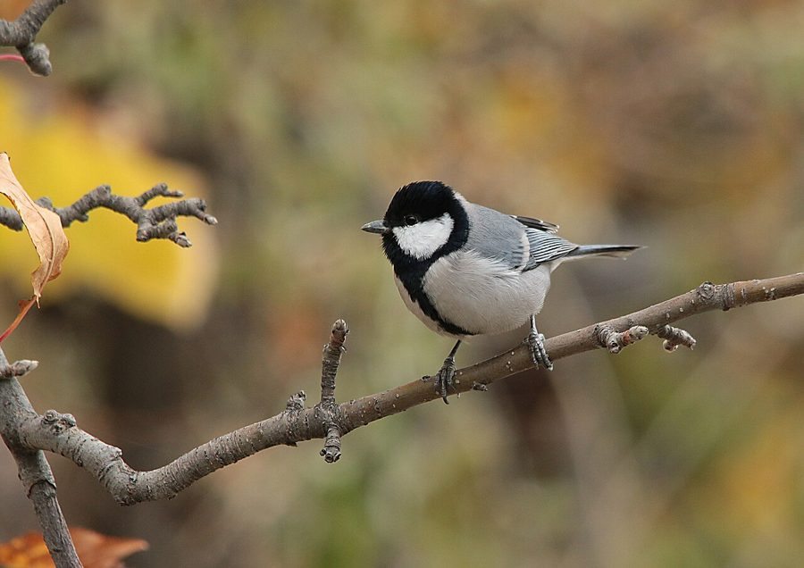

रामगंगराCinereous Tit
Parus cinereus · Paridae · BRD-0171

- Scientific name वैज्ञानिक नाम
- Parus cinereus Vieillot, 1818
- Family कुल
- Paridae
- Hindi हिंदी
- रामगंगरा
- Local names स्थानीय नाम
- ramgangra, ram gangra, cinereous tit, tit
- Status here यहाँ की स्थिति
- native
- Movement आवागमन
- Resident, here all year
- Known from कहाँ दर्ज
- Others have published records from the Basti–Ayodhya districts बस्ती–अयोध्या के ज़िलों से दूसरों के प्रकाशित अभिलेख
- IUCN IUCN
- LC
- Review समीक्षा
- audited and independently read
When to look कब देखें
Present all year. साल भर मौजूद।
Uses and possibilities उपयोग और संभावनाएँ
Drawn from the documented uses in the profile below, where each is labelled traditional, current or a research lead. All uses →
रामगंगरा / Cinereous Tit
Parus cinereus Vieillot, 1818 — Paridae
रामगंगरा — एक छोटी, राख-रंग की चिड़िया जो गाँवों के बागों, पेड़ों पर पाई जाती है। इसका सिर और पीठ राख जैसे भूरे रंग के होते हैं। इसके गले में काली पट्टी होती है — जैसे किसी ने काली टाई बाँधी हो। यह तेज़ाबी चिड़िया है, पेड़ों पर इधर-उधर उड़ती रहती है, कीड़ों को खोजती है। इसकी आवाज़ गंगरे (पछेर्रे) से मिलती है, इसलिए इसे "रामगंगरा" कहते हैं।
Quick Identification त्वरित पहचान
| Feature | Description |
|---|---|
| Size | Small, compact; 13–14 cm long |
| Head and back | Ash-grey or cinereous (grey); uniform coloration |
| Underparts | Whitish to pale grey |
| Throat and breast | Black line or patch (like a black bib or tie); diagnostic |
| Wings and tail | Darker grey; some feather pattern visible |
| Bill | Small, pointed, black; adapted for gleaning insects |
| Legs | Black |
| Behaviour | Restless, acrobatic; moves rapidly through branches |
| Voice | Loud, metallic calls; various notes including a rapid chitter |
Field tip: In gardens and on scattered trees in villages, look for a small grey bird with a distinctive black bib or line on the throat and breast. Often hangs upside-down while foraging. The ash-grey coloration and black throat mark are diagnostic. Active and vocal; often the first clue to its presence is the loud metallic call.
हिंदी — कैसे पहचानें: छोटी राख-रंग की चिड़िया। गले में काली पट्टी या बिब। पेड़ों पर बहुत सक्रिय। तेज़ आवाज़।
Morphology आकारिकी
Biometrics:
| Measurement | Range |
|---|---|
| Total length | 130–140 mm |
| Wing (folded) | 62–70 mm |
| Tail | 50–58 mm |
| Bill | 10–12 mm |
| Tarsus | 16–19 mm |
| Weight | 8–12 g |
Plumage: Overall ash-grey or cinereous (greyish-brown) on the head, back, wings, and tail. The colour is uniform and diagnostic. Underparts (belly, flanks) are whitish or pale grey.
Throat and breast: Distinguished by a black line, patch, or bib extending from the chin down the throat and onto the upper breast. This black marking is the key field character. The extent of black varies slightly between individuals.
Wings and tail: Grey, slightly darker than the back. Wing feathers show subtle patterning with pale feather edges.
Bill: Small, pointed, black; adapted for gleaning insects from foliage and branches.
Legs and feet: Black; relatively short.
Eyes: Dark.
Sexes: Slight sexual dimorphism, with females sometimes slightly paler than males; the black throat/breast marking present in both sexes.
Juveniles: Similar to adults but duller; black throat marking may be less prominent.
Vocalisations: Contact calls are loud, metallic, and varied; include rapid chatter, whistles, and other notes. The commonality of loud calling is a key to field identification.
हिंदी: राख जैसा रंग सब से खास है। गले की काली पट्टी भी बहुत पहचान दिलाती है। आवाज़ तेज़ होती है।
Behaviour & Ecology व्यवहार और पारिस्थितिकी
The Cinereous Tit is a small, active, and highly vocal insectivore that forages in gardens, cultivated areas, and forest edges. It is similar in behaviour to the Great Tit (Parus major) but is less habitat-specialized and more comfortable in human-dominated landscapes.
Foraging behaviour: Acrobatic forager; hangs from branches, probes into crevices, and gleans insects from foliage. Also feeds on small seeds and plant matter. Primary diet consists of insects, particularly small beetles, ants, caterpillars, and spiders. Seeds become more important during winter or in areas with low insect availability.
Feeding technique: Like other tits, hangs from branches at various angles, including inverted (upside-down). Probes into bark crevices for hidden insects. Visits flowers for insects. May feed on ground occasionally.
Habitat preference: Occupies gardens, orchards, cultivated areas with scattered trees, and forest edges. Less specialized than Great Tit; adapts well to human settlements. Often in mixed vegetation including fruit trees, flowering shrubs, and ornamental plantings.
Social behaviour: Generally in pairs or small family groups; may join mixed-species flocks with other small birds, particularly during non-breeding season. Pairs may remain together year-round.
Vocalisations: Highly vocal; the loud, metallic calls and rapid chatter are distinctive and are often the first clue to the bird's presence.
Territoriality: Likely territorial during breeding season; behaviour in non-breeding season not well documented.
Seasonality: Year-round resident throughout its range in India; no significant migratory movements documented.
हिंदी: अकेला या जोड़े में रहता है। बहुत शोर करता है। कीड़े खोजता है पेड़ों पर।
Life Cycle / Phenology जीवन चक्र
| Stage / season | Notes |
|---|---|
| Breeding season | February–June; peak March–April |
| Nest | In tree cavities or holes in buildings; uses nest boxes |
| Clutch size | 4–8 eggs; typically 5–6 |
| Incubation period | 12–14 days |
| Fledging period | 14–16 days |
| Brood | Usually 1–2 broods per season |
| Non-breeding season | July–January; birds remain active year-round |
| Moult | Post-breeding; typically June–August |
| Longevity | Unknown in wild; likely 3–5 years |
Seasonal pattern in eastern UP:
- January–February: Non-breeding; feeding on insects and seeds; pairs form
- March–April: Breeding season; nest-building and egg-laying; peak activity
- May–June: Chicks in nests; post-breeding moult may begin
- July–August: Fledging of young; post-breeding moult continues
- September–December: Non-breeding; mixed flocks may form
- Year-round presence: Resident throughout the region
हिंदी: फरवरी से जून तक अंडे देते हैं। पेड़ों के खोखले में घोंसला बनाते हैं। साल भर रहते हैं।
Host Plants or Prey आहार
Insectivorous diet (primary):
- Small beetles
- Ants and ant pupae
- Caterpillars (particularly hairy species)
- Spiders and spider eggs
- Small grasshoppers
- Other small arthropods
Plant matter (secondary):
- Small seeds
- Buds (occasionally)
- Flower parts (occasionally)
Diet composition varies seasonally, with insects dominant during warm months and seeds more important during cooler months.
हिंदी: कीड़े, चींटी, छोटे कीड़े खाता है। बीज भी खाता है।
Predators / Natural Enemies शत्रु
- Raptors: Shikra, Eurasian Sparrowhawk, and other small hawks
- Snakes: Particularly racer and rat snakes at nest sites
- Corvids: Crows may harass or prey on eggs and chicks
- Predatory birds: Some predatory birds opportunistically prey on chicks
हिंदी: बाज़, कौवे, सँप इसका शिकार करते हैं।
Agricultural / Human Relevance कृषि प्रासंगिकता
Beneficial bird: Feeds heavily on insects, including agricultural pests (beetles, caterpillars, ants). May provide minor pest control benefit in gardens and orchards.
Protected under law: Like all wild birds in India, protected under the Wildlife (Protection) Act 1972, Schedule IV. Hunting or trapping is prohibited.
Nest box programs: The bird readily uses man-made nest boxes; nest box programs have been successful in some regions for monitoring and supporting populations.
Cultural significance: The bird is appreciated by villagers and is considered a "good" bird for its insect control value. No specific traditional uses documented.
हिंदी: यह विधि अधिनियम 1972 की अंतर्गत संरक्षित है। गाँवों के बागों में कीटों को खाता है।
Expected Locally स्थानीय रूप से अपेक्षित
Not a field record. Written from published accounts for eastern Uttar Pradesh. No confirmed local sighting yet — if you have seen it, that is what the atlas needs.
अभी तक स्थानीय पुष्टि नहीं। यह विवरण प्रकाशित स्रोतों से है, किसी अवलोकन से नहीं।
Not a field record. This species' presence is based on its known distribution in India. GBIF holds published records from the wider Awadh–Purvanchal plain and from Basti–Ayodhya districts.
ये दूसरों के प्रकाशित अभिलेख हैं, परियोजना के नहीं। यह पहले से दर्ज है।
Expected year-round in gardens, orchards, and cultivated areas with scattered trees throughout Basti district and eastern Uttar Pradesh. Most easily found in March–April during the peak of breeding activity and loud calling. Particularly abundant in areas with good tree cover and flowering/fruiting vegetation.
A dated photograph of the bird on a tree or feeding, showing the characteristic grey plumage and black throat mark, would confirm a local record.
Distribution वितरण
Global range: Indian subcontinent; endemic to South Asia. Distributed from the foothills of the Himalayas to southern peninsular India.
In India: Widespread in gardens, cultivated areas, and forest edges throughout the country; less common at high elevations.
In Uttar Pradesh: Common in gardens and cultivated areas throughout the state; abundant in eastern districts.
In Basti district / eastern UP: Common year-round in gardens, orchards, and areas with scattered trees and mixed vegetation.
Research Questions शोध प्रश्न
- क्या रामगंगरे की खुराक में मौसम के अनुसार परिवर्तन होता है — क्या गर्मी में ज़्यादा कीड़े खाता है और सर्दी में ज़्यादा बीज?
- What proportion of agricultural pests (beetles, caterpillars) are consumed by Cinereous Tit in cultivated areas?
- How many territories are established per unit area in typical village garden habitats, and does territory size vary with habitat quality?
- क्या गाँव के बाग़ों में खोखल नहीं होने पर (घोंसला बनाने की जगह नहीं होने पर) यह कृत्रिम घोंसले-डिब्बे अपना लेता है?
- How many chicks fledge per breeding season, and what is the juvenile survival rate?
- क्या सर्दी में झुंड बनता है, और क्या वह दूसरी चिड़ियों के झुंडों के साथ घूमता है?
Similar Species मिलती-जुलती प्रजातियाँ
| Species | Key Difference | Hindi |
|---|---|---|
| Great Tit (Parus major) | Larger (15 cm); more contrasting black and white on head; broader black stripe down breast | बड़ा टिट, अधिक काला-सफ़ेद |
| Asian Great Sparrow (Passer indicus) | Larger; stouter bill; different head pattern; not as acrobatic | गौरैया, बड़ी |
Field rule: A small, uniformly ash-grey bird with a black throat/breast patch, highly active and vocal on trees in gardens — this is the Cinereous Tit. Larger tits with more contrast on the head are Great Tits. Birds with brown plumage and stubbier bills are likely sparrows.
Taxonomy & Classification वर्गीकरण
Original description. The species was described by Louis Pierre Vieillot in 1818 in the Nouvelle Dictionnaire d'Histoire Naturelle as Parus cinereus. Type locality is India (not further specified).
Subspecies. No subspecies are currently recognised within Parus cinereus; the species is treated as monotypic.
Family and order placement. Order Passeriformes (perching birds); family Paridae (tits, chickadees, and willow tits). The genus Parus includes the Great Tit and closely related species distributed across the Old World.
Phylogenetic notes. Parus cinereus is endemic to the Indian subcontinent and represents a sister taxon to the widespread Great Tit (Parus major) and other Asian Parus species.
IUCN status rationale. The species is assessed as Least Concern (LC) due to its wide range, abundance, and adaptability to human-modified landscapes. Populations appear stable or increasing.
हिंदी: भारत ही का रहने वाला है। बड़ी टिट (Parus major) का रिश्तेदार है।
Photo Gallery फोटो गैलरी
No photos yet — add field photos to media/species/cinereous_tit/ and run node scripts/sync_photos.js.
Wanted photos:
- Close-up showing grey plumage and black throat patch
- Hanging upside-down while foraging
- Pair together on a perch
- At nest box or nest site
References संदर्भ
- Vieillot, L.P. (1818). Nouvelle Dictionnaire d'Histoire Naturelle. Vol. 27. Paris. [original description]
- Ali, S. & Ripley, S.D. (1973). Handbook of the Birds of India and Pakistan. Vol. 8 (Warblers to Redstarts). Oxford University Press, Delhi. Pp. 256–258.
- Grimmett, R., Inskipp, C. & Inskipp, T. (2011). Birds of the Indian Subcontinent: The Ripley Guide. 2nd edn. Helm Identification Guides, Oxford. Vol. 2, pp. 499–500.
- GBIF Occurrence Data — Parus cinereus, India (2024).
- Rasmussen, P. C. & Anderton, J. C. (2012). Birds of South Asia: The Ripley Guide. 2nd ed. Smithsonian Institution and Lynx Edicions.
- BirdLife International. Parus cinereus. IUCN Red List of Threatened Species. https://www.iucnredlist.org/
Source file: species/fauna/birds/cinereous_tit.md